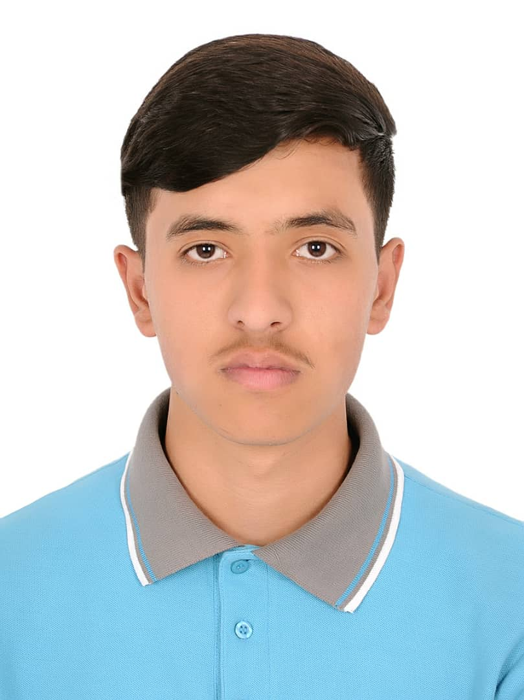

Zahed Yasin

Objectives
Dedicated and results-oriented professional seeking a challenging position where I can utilize my skills.
Education
- High School Diploma Afghan Turk High School
- Diploma of English Kardan University
Skills
- Strong interpersonal skills, including the ability to effectively communicate and collaborate with team members and stakeholders.
- Proven ability to listen actively and communicate empathetically, fostering positive working relationships.
- Quick learner with a passing for staying updated on emerging technologies and trends in the field of computer science.
- Ability to analyze and solve complex problems efficiently.
Awards and Certifications
- Recipient of the "Student of the Year" award multiple times during my high school tenure at Afghan Turk High School.
- Certificate of Achievement in English Language Proficiency from Kardan University.
Other